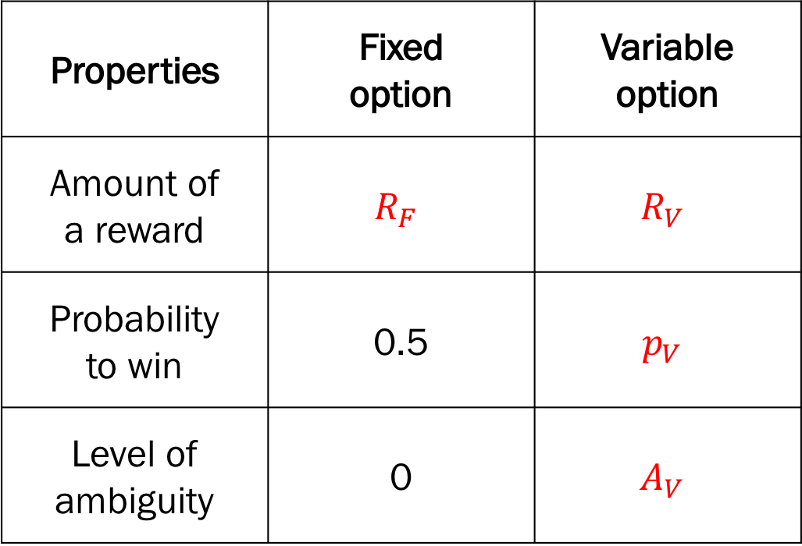
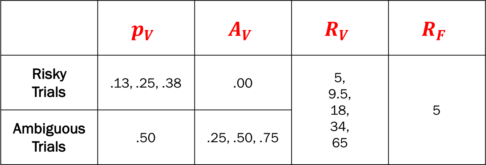

Choice under risk and ambiguity task
Levy, I., Snell, J., Nelson, A. J., Rustichini, A., & Glimcher, P. W. (2010). Neural Representation of Subjective Value Under Risk and Ambiguity. Journal of Neurophysiology, 103(2), 1036-1047.

Overview of the choice under risk and ambiguity task.
1. Initializion
1) Task: Choice under risk and ambiguity

Design variables for the choice under risk and ambiguity task.
Design variables
p_var(\(p_V\)): the probability to win the reward of the variable optionFixed to 0.5 for ambiguous trials
a_var(\(A_V\)): the level of ambiguity of the variable optionFixed to 0 for risky trials
r_var(\(R_V\)): the amount of reward of the variable optionr_fix(\(R_F\)): the amount of reward of the fixed option
Response variable:
choice:0(fixed option),1(variable option)
[1]:
from adopy.tasks.cra import TaskCRA
task = TaskCRA()
[2]:
task.name
[2]:
'Choice under risk and ambiguity task'
[3]:
task.designs
[3]:
['p_var', 'a_var', 'r_var', 'r_fix']
[4]:
task.responses
[4]:
['choice']
2) Model: Linear model
Model parameters
alpha(\(\alpha\)): risk attitude parameterbeta(\(\beta\)): ambiguity attitude parametergamma(\(\gamma\)): inverse temperature
[5]:
from adopy.tasks.cra import ModelLinear
model = ModelLinear()
[6]:
model.name
[6]:
'Linear model for the CRA task'
[7]:
model.params
[7]:
['alpha', 'beta', 'gamma']
3) Grid definition
Grid for design variables
[8]:
import numpy as np
# Rewards
r_var = [5, 9.5, 18, 26, 34, 50, 65, 95, 131, 181, 250]
r_fix = [5, 7, 10, 13, 18, 25, 34, 48, 66, 91, 125]
rewards = np.array([
[rv, rf] for rv in r_var for rf in r_fix if rv > rf
])
# Prob & Ambig (Risky trials)
p_var_risky = [.13, .25, .38]
pa_risky = np.array([[pr, 0] for pr in p_var_risky])
# Prob & Ambig (Ambiguous trials)
a_var_ambig = [.25, .5, .75]
pa_ambig = np.array([[0.5, am] for am in a_var_ambig])
# Prob & Ambig
pr_am = np.vstack([pa_risky, pa_ambig])
grid_design = {('p_var', 'a_var'): pr_am, ('r_var', 'r_fix'): rewards}
Grid for model parameters
[9]:
grid_param = {
'alpha': np.linspace(0, 3, 11)[1:],
'beta': np.linspace(-3, 3, 11),
'gamma': np.linspace(0, 5, 11)[1:]
}
Grid for response variables
[10]:
grid_response = {
'choice': [0, 1]
}
4) Engine initialization
[11]:
from adopy import Engine
engine = Engine(task, model, grid_design, grid_param, grid_response)
2. Design comparison
ADO design
Fixed design, used by Levy et al. (2010)
Random design

Fixed design - design pairs used by Levy et al. (2010).
[12]:
N_TRIAL = 60
Functions
Simulate a response
[13]:
# True parameter values to simulate responses
PARAM_TRUE = {'alpha': 0.67, 'beta': 0.66, 'gamma': 1.5}
[14]:
from scipy.stats import bernoulli
def get_simulated_response(design):
# Calculate the probability to choose a variable option
p_var, a_var, r_var, r_fix = (
design['p_var'], design['a_var'], design['r_var'], design['r_fix']
)
alpha, beta, gamma = PARAM_TRUE['alpha'], PARAM_TRUE['beta'], PARAM_TRUE['gamma']
u_fix = 0.5 * np.power(r_fix, alpha)
u_var = (p_var - beta * a_var / 2) * np.power(r_var, alpha)
p_obs = 1 / (1 + np.exp(-gamma * (u_var - u_fix)))
# Randomly sample a binary choice response from Bernoulli distribution
return bernoulli.rvs(p_obs)
Generate design pairs for the fixed design (Levy et al., 2010)
[15]:
import pandas as pd
def generate_fixed_designs():
"""Generate design pairs used by Levy et al. (2010)"""
# Prob & Ambig
pa_risky = [(.5, a_var) for a_var in [.13, .25, .38]] # for risky conditions
pa_ambig = [(p_var, .0) for p_var in [.25, .50, .75]] # for ambiguous conditions
pa_var = pa_risky + pa_ambig
# Rewards
rewards = [(r_var, r_fix) for r_var in [5, 9.5, 18, 34, 65]
for r_fix in [5]]
# Make unique design pairs in a 2d matrix
designs = [[p_var, a_var, r_var, r_fix] for (p_var, a_var) in pa_var
for (r_var, r_fix) in rewards]
designs = designs + designs # Double the design pairs
np.random.shuffle(designs) # Shuffle the pairs
return pd.DataFrame(designs, columns=['p_var', 'a_var', 'r_var', 'r_fix'])
[16]:
designs_fixed = generate_fixed_designs()
designs_fixed.head()
[16]:
| p_var | a_var | r_var | r_fix | |
|---|---|---|---|---|
| 0 | 0.5 | 0.25 | 18.0 | 5 |
| 1 | 0.5 | 0.13 | 9.5 | 5 |
| 2 | 0.5 | 0.25 | 9.5 | 5 |
| 3 | 0.5 | 0.25 | 65.0 | 5 |
| 4 | 0.5 | 0.00 | 5.0 | 5 |
Simulation
[17]:
# Make an empty DataFrame to store data
df_simul = pd.DataFrame(
None, columns=['design_type', 'trial',
'mean_alpha', 'mean_beta', 'mean_gamma',
'sd_alpha', 'sd_beta', 'sd_gamma'])
# Run simulations for three designs
for design_type in ['optimal', 'staircase', 'random']:
# Reset the engine as an initial state
engine.reset()
for i in range(N_TRIAL):
# Design selection / optimization
if design_type == 'optimal':
design = engine.get_design('optimal')
elif design_type == 'staircase':
design = designs_fixed.iloc[i, :]
else: # design_type == 'random'
design = engine.get_design('random')
# Experiment
response = get_simulated_response(design)
# Bayesian updating
engine.update(design, response)
# Save the information for updated posteriors
df_simul = df_simul.append({
'design_type': design_type,
'trial': i + 1,
'mean_alpha': engine.post_mean[0],
'mean_beta': engine.post_mean[1],
'mean_gamma': engine.post_mean[2],
'sd_alpha': engine.post_sd[0],
'sd_beta': engine.post_sd[1],
'sd_gamma': engine.post_sd[2],
}, ignore_index=True)
Results
[18]:
%matplotlib inline
%config InlineBackend.figure_format = 'retina'
from matplotlib import pyplot as plt
fig, ax = plt.subplots(1, 3, figsize = [15, 4])
# Draw black dotted lines for true parameters
for i, param in enumerate(['alpha', 'beta', 'gamma']):
ax[i].axhline(PARAM_TRUE[param], color='black', linestyle=':')
for i, design_type in enumerate(['optimal', 'staircase', 'random']):
df_cond = df_simul.loc[df_simul['design_type'] == design_type]
line_color = ['blue', 'green', 'red'][i]
ax = df_cond.plot(x='trial', y=['mean_alpha', 'mean_beta', 'mean_gamma'], ax=ax,
subplots=True, figsize=(15, 4), legend=False, color = line_color, alpha = 0.7)
# Set titles and limits on y axes.
ax[0].set_title('$\\alpha$ (Risk attitude)'); ax[0].set_ylim(0, 3)
ax[1].set_title('$\\beta$ (Ambiguity attitude)'); ax[1].set_ylim(-3, 3)
ax[2].set_title('$\\gamma$ (Inverse temperature)'); ax[2].set_ylim(0, 5)
ax[0].legend(['True value', 'ADO', 'Fixed', 'Random'])
ax[1].legend(['True value', 'ADO', 'Fixed', 'Random'])
ax[2].legend(['True value', 'ADO', 'Fixed', 'Random'])
plt.show()
References
Levy, I., Snell, J., Nelson, A. J., Rustichini, A., & Glimcher, P. W. (2010). Neural Representation of Subjective Value Under Risk and Ambiguity. Journal of Neurophysiology, 103 (2), 1036-1047.